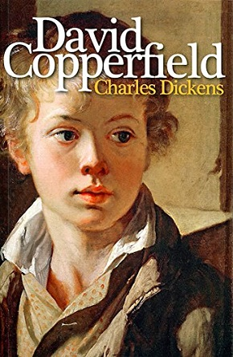

David Copperfield
David Copperfield

The book is narrated in the first person and incorporates many of the author's own life experiences. The novel tells the life journey of the main character, David, from childhood to middle age. Taking the birth of "I" as the source, the sincerity and darkness of friends, the childishness and impulsiveness of love, the sweetness and triviality of marriage, and the contradictions and harmony of family members are gathered into a stream, flowing slowly on the riverbed of fate, and ultimately merging into the tolerant and magnificent sea. In between are interspersed various characters and chances. The language is witty and entertaining, showing a broad picture of England in the mid-19th century and reflecting Dickens's ideal of wanting the world to be full of goodness and justice.
enjoy reading